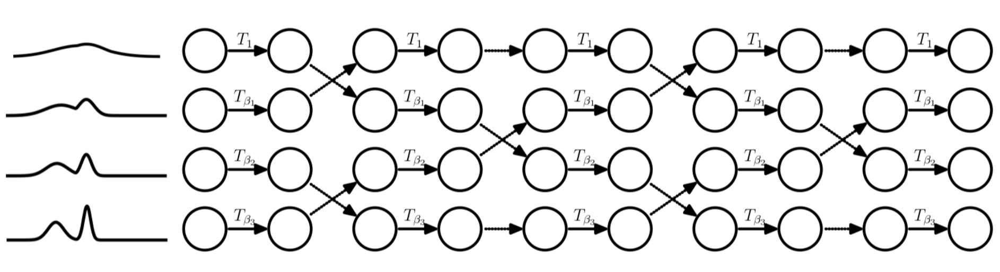

19. Parallel Tempering and Stochastic HMC#
This chapter is adapted from AM207 (Harvard, Fall 2021). Watch the recorded lecture.
In this chapter
Review of HMC
Parallel Tempering
Stochastic Gradient HMC
19.1. Review of HMC#
Hamiltonian Monte Carlo (HMC)#
We use the Gibbs distribution to transform between probability density functions and energy functions
This allows us to use gradient information when we sample from \(\pi(q)\).

FAQs About HMC#
Question: HMC seems complicated, do I really need to use it?
Answer: Yes. For complex models of interest (non-conjugate, hierarchical, latent variable) HMC is the least complicated sampler you can use to perform reliable inference.Question: Ok, but can I treat the theory as a black-box, i.e. can I just press some
model.sample()button?
Answer: No. HMC (like all samplers) must be tuned. That is, for many models and datasets,model.sample()will not have good performance. You need the theory to tell you which design choices need to be adjusted and in what way.Question: But I don’t need to implement it since
pymc3has already done so, right?
Answer: You need to implement HMC. Becausepymc3is not going to scale well for Bayesian inference for models with neural network likelihoods and large datasets.Question: We worked so hard to derive HMC, so it’s state-of-the-art and can be applied to any Bayesian model for any dataset right?
Answer: No. HMC may still be inefficient for complex posteriors and improving HMC is an active area of research (see the readings at the end of this chapter). Furthermore, HMC does not scale well to large datasets.
HMC for Multimodal Distributions#
Signs of Maybe Convergence?#
Look for:
Large segments of the chain should have give similar statistics (mean, variance etc)
Low correlations within states of the chain
“Reasonably high” acceptance rate of proposed steps
Multiple chains initialized from different initial points give similar results
Best practices:
Always run multiple chains initialized from very different random starting points
Always run your chains for as long as you can then burn and thin
Always check all relevant convergence diagnostics
Never be too certain: remember that there is no “proof” of convergence for finite chains!
Keep reading about best practice!
Visual Diagnostics: Traceplots of Multiple Chains#

Autocorrelation: the “Effective” Sample Size#
We quantify how much the samples in the chain are correlated with the samples obtained \(k\)-steps later (the \(k\)-th lag). The autocorrelation \(\rho_k\) is defined as
We plot the autocorrelation for each \(k = 1, \ldots, \frac{N}{2}\), and this autocorrelation plot tells us how much we to thin in order to obtain effectively independent samples. The autocorrelation plot gives us an idea of the effective sample size of the Markov chain.
Visual Diagnostics: The Autocorrelation Plot#

Quantitative Diagnostics#
Idea: measure between-chain and within-chain variability of a quantity of interest – if the chains have converged, these measures will be similar; otherwise, the between-chain variability will be larger.
Gelman & Rubin: quantity \(\widehat{R}_{\text{GR}} = \frac{B}{W}\), which compares \(B\) the empirical variance of all the chains pooled and \(W\) the average empirical variance within each chain. If \(\widehat{R}_{\text{GR}}\) is large then the chains are very different (not converged). If \(\widehat{R}_{\text{GR}} = 1\) is ideal but in practice we accept \(\widehat{R}_{\text{GR}} < 1.05\).
Geweke: takes two nonoverlapping parts (usually the first 0.1 and last 0.5 proportions) of the Markov chain and compares the means of both parts, using a difference of means test to see if the two parts of the chain are from the same distribution (the test statistic is a standard Z-score with the standard errors adjusted for autocorrelation).
19.2. Parallel Tempering#
Multimodal Posteriors#
But when are posteriors multimodal? Often, the posterior can be multimodal when the likelihood is non-identifiable, i.e. there are multiple sets of model parameters that can explain the data equally well.
For example, the observed data likelihood of a Gaussian mixture model with 2 univariate components is:
But, given an observation \(y\), there are multiple sets of model parameters \(\mu, \sigma^2, \pi\) that will fit the data:
That is, we can label the components however we want without changing the fit.
When we fit a Bayesian GMM, the posterior will contain multiple modes, one for each way of labeling the components.
Note: There are more non-trivial ways in which the likelihood of a GMM can be non-identifiable and, hence, its posterior multimodal!
The Effect of Temperature#
Why is it hard for samplers to visit multiple modes in a target distribution?
MCMC samplers can only propose locally, so moving from one mode to another requires traveling through regions that are very unlikely under the target distribution.
In HMC terms, moving from one mode to another requires climbing a big hill – this is called an energy barrier. From simulated annealing we know that range of movement of a sampler of a Gibbs distribution is enhanced when we increase the temperature term:
Another way to say this is that when temperature is high, the potential energy landscape \(\frac{-\log\pi(q)}{T}\) is flat, hence easier to explore.
But we can’t simply set \(T > 1\)! Doing so means that we will not be sampling from the target \(\pi(q)\) (i.e. the above equation will not hold).
The Idea of Parallel Tempering#
Using one MCMC chain with \(T>1\) will produce incorrect samples. What if we use multiple chains: one for \(T=1\) (which will produce samples from \(\pi(q)\)) and other chains with \(T>1\), and we allow the chains to exchange samples once in a while?


Parallel Tempering with HMC#
We set an increasing sequence of temperatures \(T_0=1, \ldots, T_M >1\). For each temperature, denote the corresponding Gibbs distribution and potential energy function as follows:
We denote the potential energy of \(\pi(q)\) as \(U(q) = -\log\pi(q)\).
Parallel Tempering HMC
1. initialize \(M\) number of HMC samplers: each using the same kinetic energy function, the \(m\)-th sampler using the potential energy function \(U_m(q)\).
2. alternate between:
\(\quad\)a. sample \(S\) samples from each chain independently
\(\quad\)b. at the \(S\)-sample, the sample \(q^{S}_{m+1}\) from chain \(m + 1\) is exchanged with the sample \(q^{S}_{m}\) from chain \(m\) with the probability:
In the end, we keep the samples in the \(0\)-th chain.
Can you show that parallel tempering is detailed balanced? What about irreducible and aperiodic?
19.3. Stochastic Gradient HMC#
Problems with Scaling HMC#
Let \(\mathcal{D} = \{(x_1, y_1), \ldots, (x_n, y_n)\}\) be our observed data (alternatively we can have a set of observed that that do not include any covariates), let the target distribution \(p(\mathbf{w} | \mathcal{D})\) from which we want to sample be the posterior of the Bayesian model:
Then the potential energy function determined by the posterior \(p(\mathbf{w} | \mathcal{D})\) is given by
We see that during each iteration of HMC, whenever we need to compute \(\nabla_\mathbf{w} U\), we have to evaluate \(\sum_{n=1}^N \nabla_\mathbf{w} p(y_n | x_n, \mathbf{w})\) at each data point \((x_n, y_n)\). Now if your data is large, this means that each step of HMC can take very long to compute!
Idea: use stochastic gradients for HMC! That is rather than computing the gradient over the entire dataset, we compute it over mini-batches of the data, just as we did in stochastic gradient descent.
Naïve Stochastic Gradient HMC#
So what if we implemented HMC with mini-batch gradients? That is, what if we approximated \(\nabla_{\mathbf{w}}U\) by
Again, if the observed data are independent, then by the Central Limit Theorem we have that \(\nabla \widetilde{U}(\mathbf{w}) \approx \nabla U(\mathbf{w}) + \mathcal{N}(0, V(\mathbf{w}))\), where \(V\) is the covariance of the gradient noise. So, mini-batch gradient is a noisy approximation of the true gradient \(\nabla U(\mathbf{w})\).
Unfortunately, naïve stochastic gradient HMC does not preserve the target distribution \(p(\mathbf{w}|\mathcal{D})\)!
Corollary: The distribution \(\pi(\mathbf{w}, p)\propto \mathrm{exp}(−H(\mathbf{w}, p))\), where \(p\) is the momentum, is no longer invariant under naïve stochastic gradient Hamiltonian dynamics.
We can correct the errors in naïve stochastic gradient Hamiltonian dynamics with a Metropolis-Hastings step (i.e. we don’t accept all proposed samples), but in practice stochastic gradients produce large deviations from true Hamiltonian dynamics and hence the acceptance rate will be low! Furthermore, every MH step requires that we compute \(p(\mathbf{w} | \mathcal{D})\), which requires evaluating the likelihood at every data point!
Stochastic Gradient HMC with Friction#
If HMC is like rolling a marble on a landscape made of ice - where the motion of the marble is determined completely by the gradient, then naïve stochastic gradient HMC is like rolling a marble on ice with a wind that blows in random directions.
Idea: we add friction to the surface, this will lessen if not cancel the effect of wind.
Let our kinetic energy function be \(\frac{1}{2}p^\top M^{-1} p\). Naïve stochastic gradient HMC dynamics:
where \(B = \frac{1}{2} \epsilon V(\mathbf{w})\), with \(V\) the covariance of gradient noise and \(\epsilon\) the step-size.
Stochastic Gradient HMC with Friction dynamics:
where \(BM^{-1} p\) is a friction term that reduces the effect of the “random wind” \(\mathcal{N}(0, 2B dt)\).
If the friction term uses the exact gradient noise covariance, then SGHMC with Friction has exact dynamics - that is, we do not need an Metropolis-Hastings correction step!
Stochastic Gradient HMC in Practice#
In practice, we don’t know the gradient noise covariance \(V\) and hence cannot compute \(B\)! Instead, we approximate \(\widehat{B} \approx B\) and choose a user-defined friction coefficient \(C\). Then, Stochastic Gradient HMC with Friction dynamics becomes:
Theorem: If \(\widehat{B} = B\) then the dynamics of SGHMC with Friction yields the stationary distribution \(\pi(\mathbf{w}) \propto \mathrm{exp}\{-H(\mathbf{w}, p) \}\).
That is, SGHMC with Friction is an MCMC sampler if our estimation \(\widehat{B}\) of \(B\) (related to the true gradient noise variance) is exact. Note: this means that, in practice, SGHMC with Friction is not an MCMC sampler, since we can’t know the exact gradient noise variance!
But SGHMC is one of only very few ways we have for scaling MCMC methods to large datasets.
19.4. Further Reading#
Parallel Tempering
Improvements to HMC and MCMC in General
(Research Paper) Stochastic Gradient Hamiltonian Monte Carlo
(Research Paper) The No-U-Turn Sampler
(Research Paper) Riemannian Manifold Hamiltonian Monte Carlo
(Research Paper) Does Hamiltonian Monte Carlo mix faster than a random walk on multimodal densities?